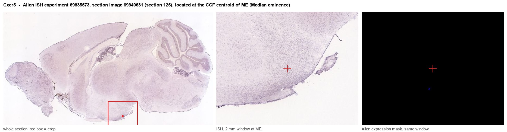
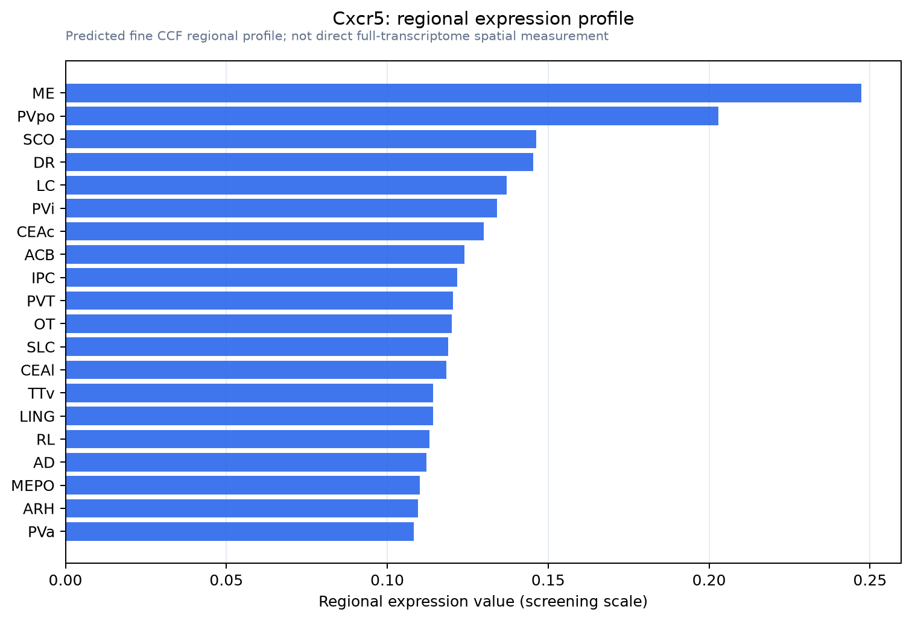

Cxcr5
C-X-C chemokine receptor type 5 (CXC-R5) (CXCR-5) (Burkitt lymphoma receptor 1 homolog) (CD antigen CD185)
Spatial tier: RESTRICTED · Class: GPCR · Top region: ME (Median eminence) · Positive regions: 15/554
43.7Discovery Score
34.8Targetability Score
CEvidence grade C
What this means: Cxcr5: fine CCF profile is restricted toward ME (top regions: ME, PVpo, SCO, DR, LC; 15 positive regions); direct spatial validation is still required.
Function in ME: evidence, prediction, innovation
- Gene function
- CXCR5 is a Gi-coupled class A chemokine receptor whose ligand is CXCL13. In the immune system it positions B cells and follicular helper T cells within lymphoid follicles and germinal centres. In the nervous system the CXCL13-CXCR5 axis has emerged as a driver of chronic pain, acting on spinal dorsal horn neurons and astrocytes.
- Region function
- The median eminence is the neurohaemal circumventricular interface at the base of the hypothalamus, where tanycytes and fenestrated portal capillaries let hypophysiotropic peptides such as GnRH, TRH, CRH, GHRH and dopamine reach the anterior pituitary.
- Published in this region
- inferred No region-specific literature found. The best-established neural role is peripheral and spinal: Jiang et al. 2016 showed that CXCL13 acting on CXCR5 drives spinal astrocyte activation and neuropathic pain, and Harrer et al. 2022 review CXCL13-CXCR5 as a marker of intrathecal B-cell activity in neuroinflammation; a median eminence signal most plausibly reflects the fenestrated portal vasculature and its associated immune cells.
- Predicted function
- Prediction: CXCR5 in the median eminence is predicted to mark immune cells and possibly tanycytes at the one hypothalamic site where circulating CXCL13 has unrestricted access to brain parenchyma, forming a checkpoint through which peripheral inflammation reaches the neuroendocrine axis. Cxcr5 deletion or CXCL13 neutralisation is predicted to leave basal hormone secretion intact but to reduce immune-cell accumulation in the median eminence and blunt the suppression of LH pulsatility and the rise in corticosterone that follow systemic inflammatory challenge; local CXCL13 infusion should conversely recruit lymphocytes and acutely suppress the reproductive axis.
- Innovation
- ★★★★☆ 4/5 A plausible and untested neuroimmune-endocrine interface with good immunology reagents, though the likely non-neuronal identity of the CXCR5-positive cells limits circuit-level novelty.
- Tools
- Cxcr5 knockout and Cxcr5-CreERT2 mice; CXCL13 recombinant ligand and neutralising antibodies; anti-CXCR5 antibodies and flow-cytometry panels; small-molecule CXCR5 antagonists remain limited; Rax-CreERT2 and Cx3cr1-CreER for tanycyte versus myeloid attribution in ME.
- References
Direct evidence located at the region

Allen ISH experiment 69835573, section image 69840631 (section 125): the section that contains the CCF centroid of Median eminence according to the Allen image-to-atlas alignment (reference_to_image), with a 2 mm window around that point. Left: whole section, red box = window. Middle: ISH signal. Right: Allen's expression-mask view of the same window. open this image in the Allen viewer
Look it up yourself: Allen Mouse Brain ISH for Cxcr5Allen reference atlas: ME (structure 10671)ABC Atlas MERFISH viewer(in the ABC Atlas choose dataset MERFISH-C57BL6J-638850-CCF, colour cells by gene "Cxcr5" or by parcellation_substructure "ME")All genes confined to ME + 3-D brain
Direct spatial evidence
MERFISH REGION LOCATOR

Regional expression figure

Predicted WMB × fine-CCF profile; not direct full-transcriptome spatial measurement.
Spatial profile
Evidence and specificity
- Evidence status
- PREDICTED_FINE
- Direct sources
- None; predicted localization only
- Exclusive threshold
- 12 positive regions out of 554
- Spatial specificity
- 0.317
- Top-region fraction
- 0.080
- Filter status
- PASS
Interpretation limits
- Cell-type-to-region projection is imputed expression, not direct spatial measurement.
- Adult reference atlases do not establish stability across age, sex, strain, state, or disease.
- Transcript abundance does not guarantee protein abundance or genetic-tool performance.